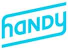
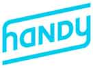

2014 At a Glance
QTM Members
2039
New Team Members
Three
Number of Events Hosted
Twelve
Amount Fundraised
$1.3M
Volunteer Committee Chairs
Ten
Title
1
New Board Members
Eight
Queens Residents on Team*
4 of 5
Access Code Graduate Salary
$72,947
Average from 6-month post-graduation survey
New Talents and Skillsets
We welcomed new members to the team.
We are growing an interisciplinary team of talented individials joined by our shared passion for increasing economic opportunity for all New Yorkers. Our new team members bring great energy and enthusiasm, as well as new skillsets and talents.
Our Motley Crew


Setting the Foundations
What's important to us; reflective
C4Q is at a critical stage of growth and is poised to triple in capacity within the coming year. Setting our values, goals, and organizational culture was an important step in setting our long-term strategy.
Discovered that we all like 90s music, OJ with pulp--oh, and we're all summer babies. We also have a knack for "winning" board games & cooking great meals. #teamretreat #staffbonding


Photo credit: @mteatran
Board of Directors
Seeking the leadership and experience of experts across various disciplines, we expanded our Board of Directors in 2014.
2013
Five
-
New Directors
- Adam Belanich
Co-founder, Joyride Coffee
- Jessica Milner
Covington & Burling
- Elias Roman
Google; Co-founder & CEO of Songza
2014
Thirteen
- Michael Borofsky
SVP of MacAndrews & Forbes
- Jennifer Hensley
Executive Director, ABNY
- Soo Kim
Chief Investment Officer, Standard General
- Andrew Kirby
Former President of Plaxall
- Sam Mandel
Partner, Betaworks
- Josh Miller
Product at Facebook; Founder of Branch
- Carl Schuman
StormHarbour Securities
- Marleen Vogelaar
Co-founder & former CSO of Shapeways
New Directors
- Elias Roman elected as Board Chair and Mike Borofsky elected as Vice Chair
- Congrats to Elias and Queens tech company Songza being acquired by Google this past summer
- Josh Miller's startup Branch acquired by Facebook in early 2014
- Adam Belanich named Forbes' 30 Under 30
Volunteer Committee
We established a Volunteer Committee with Chairs to lead new initiatives and offer their expertise.

Tech & Design
Dion Ridley
CTO of Merus
Dan Vingo
Software Engineer

Marketing
Rhoni Blankenhorn
Project Coordinator at LeadDog Marketing
Veronica Chan
Brand Communications at OXO
Simon Yi
Director of Marketing at Skift

Events
Dan Calamai
Director of Implementation Services at Operative
Aaron Cohen
Venture Director at Fueled

Fundraising
Jeanne Su
Corporate and Foundation Relations Officer at Prep for Prep

Education
Gregory Gundersen
Bioinformatician at Mount Sinai
Alex Samuel
Software Engineer

Partnerships
Derek Kan
Director of Product Management at Annalect Group
www.c4q.nyc
We love our City and now our web address shows it.
In addition to launching our redesigned website, we were proud to represent Queens as a founding member of the newly created .NYC top-level domain, the official web address for New Yorkers.


Support
We are especially humbled by and thankful for the support we received this past year.
We are excited to be working with leading poverty fighting organizations like Robin Hood, the New York Community Trust, and Arbor Brothers.


Financials
Funds Received


Thanks to everyone for making C4Q-Tech/Bash 2.0 a success!
Over 300 technologists, entrepreneurs, civic leaders, and Queens residents joined us at our Annual Gala version 2.0 to celebrate our growing tech community. Thanks to your contributions and support from our sponsors, we raised more than $100,000 to go towards increasing opportunity in Queens!
C4Q-Tech/Bash 2.0Community Building

The 2014 Queens Tech Meetup Family of Startup Demoes and Presenters


 



Caption
We hosted the Queens BuildDay of BigApps, a city-wide tech competition that empowers the sharpest minds in tech, design, and business to solve NYC's toughest challenges. Over 150 people from all over NYC came to C4Q HQ in order to build their products and take part in the first ever hackathon in Queens.

We celebrated Queens Makers at Coalition for Queens HQ for the first stop in a five borough tour

The pop up featured Makers like bhold, Valentine Goods, Mike Chen, Dami You, Amy Wu, QNSMADE, Stickbulb, AgBag as well as manufacturer Plaxall and organizations Long Island City Partnership and NYDesigns.
NYC Tech Talent Summit
As tech training, workforce development, and education field grows, policy makers and funders are trying to understand what works, how to measure success, and what resources are needed or should be redirected to develop the talent pipeline that New York City needs in order to effectively compete in the 21st century global economy.
A number of organizations working in the field have come together to produce this event as a resource for all of us to meet each other, learn what others are doing, forge new relationships and collaborations and hopefully give everyone a sense that they are part of a growing, vibrant, and dynamic community that can work together to achieve greater scale and impact.
Smithsonian APA Wiki-a-thon
We were the New York City host for this national Smithsonian event, the first Wikipedia edit-a-thon dedicated to Asian Pacific American content.
Policy & Advocacy


Public Sessions
The Queens Tech Strategic Plan is a community-based initiative that aims to lay the foundations for the continued long-term growth of tech in Queens.
From October 17 to 19, we hosted three Public Sessions on themes related to the tech ecosystem to better understand the different needs of the community, business, and residents.
C4Q EDU
Our volunteer-driven workshops led by industry experts provide opportunities for community members to learn new skills and share expertise. C4Q EDU creates a supportive environment for our community to develop technical skills.
Learn More

Web & Python
Led by C4Q Education Chairs Alex & Greg
Access Code 1.0 Updates
Talent + Opportunity = Amazing Things
We knew that the students from our Access Code 1.0 pilot possesed passion, dedication, and hustle but we are still continually amazed at how much they have been able to achieve in such a short period of time. We are thrilled to be able to share in their success.
Where our graduates work

Access Code 1.0 Updates
Access Code 2.0
Access Code 2.0
Policy & Advocacy
Innovation District
Thank You
A special thanks to the talented team members, advisors, and industry leaders for helping us grow this past year.


Image Credit: Kai Song-Nichols, 2014 Summer Intern
Join Our Newsletter to Stay Updated